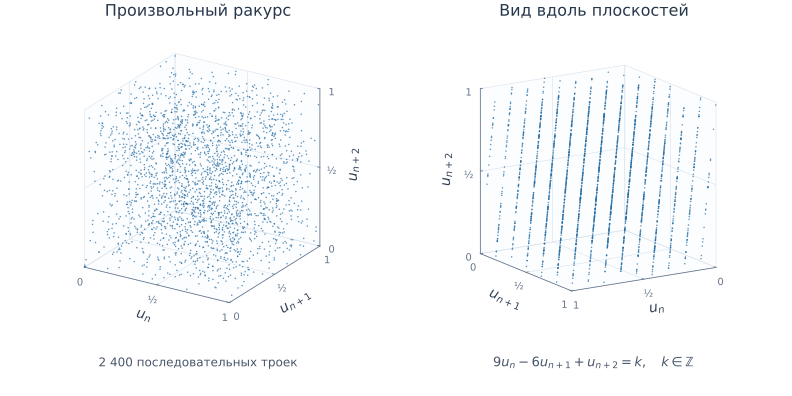
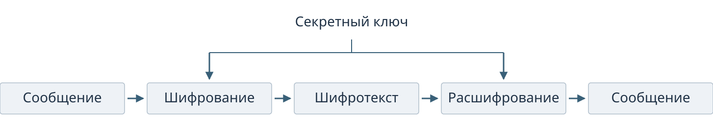
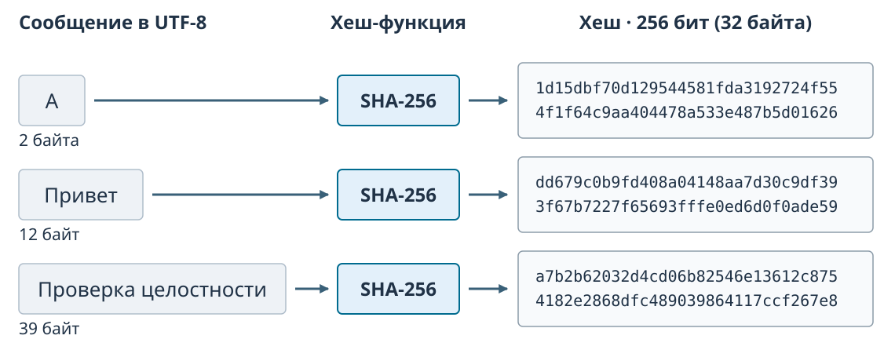
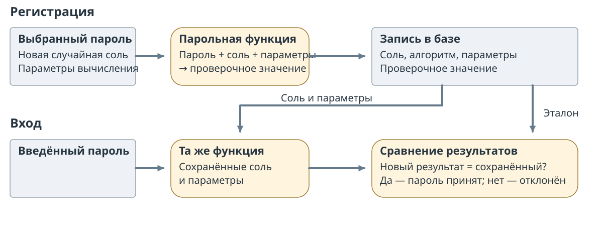

Семинар 5 — Криптография
Афоненко Анатолий
Войтович Елизавета
Зашифрованный архив
В общей папке лежит зашифрованный архив с контактами. Его можно скопировать на другой компьютер; программа открывает архив без обращения к серверу и запрашивает пароль.
Почему возможности скопировать архив ещё недостаточно, чтобы прочитать контакты?
Криптографическая случайность
Секретный ключ должен быть непредсказуемым для постороннего: зная способ его получения и доступные наблюдения, тот не должен практически уметь угадать значение.
Равные частоты нулей и единиц этого не гарантируют. В последовательности 010101… оба бита встречаются одинаково часто, но следующий бит известен по предыдущему.
[*].
Источник энтропии
Физический процесс содержит непредсказуемые изменения. Устройство измеряет их и обрабатывает результат, получая исходные данные для генератора.
Например, источник использует тепловой шум в полупроводнике: его измеряют, преобразуют измерения в цифровые данные и обрабатывают их для инициализации генератора. Обработка не создаёт неопределённость из полностью предсказуемого входа. [*]; [*].
Состояние генератора
Определение 1 (Состояние генератора) Состояние — данные, которые генератор хранит между выдачами результатов и использует для вычисления следующего результата.
При одинаковом состоянии детерминированный генератор повторит ту же последовательность.
CSPRNG использует криптографическое правило: по доступным выходам должно быть практически трудно предсказать следующие значения. Непредсказуемые данные источника инициализируют и обновляют состояние.
Предсказуемость RANDU
RANDU вычисляет , где — очередной выход. Нормализованный выход лежит в диапазоне . Для каждой тройки последовательных выходов строим точку .

Рисунок 1: Два ракурса последовательных троек RANDU
Плоскости обнаруживают зависимость соседних выходов, возникающую из правила генератора. Этот опыт выявляет дефект, но прохождение подобной проверки не доказывает криптографическую стойкость. [*].
Создание ключа
Если битов выбраны независимо и равновероятно, возможны ключей. Длина записи сама по себе не определяет исходную неопределённость: детерминированное преобразование не увеличивает число возможных входов.
Упражнение 1 (Сколько вариантов проверить)
Начальный
Известная программа получает число от 0 до 7 и детерминированно создаёт из него 256-битный ключ; других входов нет. Сколько запусков достаточно для получения всех возможных ключей? Изменится ли ответ при длине результата 512 битов?
[*].
Симметричное шифрование
Определение 2 (Симметричное шифрование) Отправитель шифрует сообщение секретным ключом; получатель использует тот же ключ для восстановления сообщения из шифротекста.
Постороннему ключ неизвестен.

Рисунок 2: Общий секретный ключ при шифровании и расшифровании
AES — пример блочного шифра, ChaCha20 — поточного. [*]; [*].
Операция XOR
XOR () даёт 0 для одинаковых битов и 1 для разных. Поточный шифр вырабатывает поток нужной длины из секретного ключа и параметров запуска. В этой модели , где — сообщение, — ключевой поток, — шифротекст.
Шифрование
Расшифрование
Повторный XOR с тем же потоком восстанавливает сообщение: . [*].
Повтор ключевого потока
Упражнение 2 (Один поток для двух фрагментов)
Начальный
Два фрагмента зашифрованы одним потоком по правилу .
| Величина | Значение |
|---|---|
| Первый шифротекст | 0110 |
| Второй шифротекст | 1110 |
| Известный первый фрагмент | 1010 |
Найдите и второй фрагмент . Какую опасность создаёт повтор потока?
Распределение общего ключа
Каждая пара участников может использовать собственный секретный ключ. Для пяти участников получается десять пар: каждый имеет четырёх партнёров, но при таком подсчёте каждая пара учтена дважды.
Рисунок 3: Парные секретные ключи пяти участников
Обоим участникам нужно безопасно получить общий ключ до обмена. Как доставить его без заранее общего секрета? [*].
Хеш-функция
Определение 3 (Хеш-функция) Хеш-функция преобразует данные в дайджест фиксированной длины. Для одинаковых входных байтов заданная функция всегда выдаёт одинаковый результат.

Рисунок 4: Разные длины входа и фиксированная длина SHA-256
SHA-256 выдаёт 256 битов, или 32 байта. Разные входы могут иметь одинаковый дайджест: это коллизия.
Изменение файла
Изменим один бит входа SHA-256 и сравним результаты:
| Входы в UTF-8 | Изменение входа | Различаются в SHA-256 |
|---|---|---|
abc и abb |
1 бит | 124 из 256 битов |
Изменение одного бита входа распространяется на дайджест; число различающихся битов зависит от пары входов. Опыт не доказывает трудность поиска коллизии.
[*].
Криптографические свойства хеша
Для функции различают три задачи поиска:
| Задача | Задано | Требуется найти |
|---|---|---|
| Прообраз | Дайджест | Вход с |
| Второй прообраз | Вход | Другой вход с |
| Коллизия | Функция | Любые два разных входа с одинаковым хешем |
Криптографическая хеш-функция должна затруднять каждый из этих поисков. [*].
Задачи поиска
Упражнение 3 (Три условия поиска)
Начальный
Назовите задачу: прообраз, второй прообраз или коллизия.
| Задано | Требуется найти |
|---|---|
| Значение | Сообщение с |
| Документ | Другой документ с |
| Только функция | Два разных сообщения с одинаковым хешем |
Проверка копии файла
Получатель вычисляет SHA-256 скачанного файла и сравнивает его с доверенным эталоном. Разные значения означают, что байты различаются. Совпадение даёт основание считать копию неизменённой относительно эталона, но совпадения хешей возможны и для разных файлов.
Злоумышленник заменил файл и размещённый рядом с ним хеш на соответствующий новому файлу. Поможет ли сравнение с этим хешем обнаружить подмену? Как получить доверенный эталон?
Проверка пароля
При входе сервису достаточно проверить введённый пароль; восстанавливать пароль из базы для этого не требуется. Вместо него хранят проверочную запись, вычисленную парольной функцией.
Если база утекла, атакующий может вычислять записи для предполагаемых паролей и сравнивать их с сохранённой. Быстрая хеш-функция делает каждую такую попытку дешёвой. [*].
Парольная запись
При регистрации выбирают случайную соль для записи и вычисляют парольную функцию с заданными параметрами стоимости. Сохраняют алгоритм, параметры, соль и результат.

Argon2id позволяет задавать расход памяти, число проходов и параллелизм. [*]; [*].
Индивидуальная соль
Соль хранится открыто и различается у записей. Она не добавляет неопределённости самому паролю, но заставляет отдельно вычислять кандидатов для разных солей.
Упражнение 4 (Две записи)
Начальный
Два пользователя выбрали один пароль. Для них применили одну парольную функцию с одинаковыми параметрами, но разными солями. Обязаны ли результаты совпасть? Можно ли использовать один вычисленный результат кандидата для обеих записей?
Подбор после утечки
Получив запись, атакующий может проверять кандидатов офлайн, без обращения к серверу. Ограничение частоты входа эти вычисления не останавливает; стоимость парольной функции увеличивает цену каждой проверки.
Упражнение 5 (Стоимость перебора)
Начальный
Для одной записи возможны 100 000 равновероятных паролей. Атакующий проверяет 1 000 разных кандидатов в секунду. Сколько времени займёт полный перебор? Сколько в среднем потребуется проверок до нахождения пароля?
Дополнительные опыты
Восстановление сообщения
Упражнение 6 (Применение XOR)
Начальный
В модели поточного шифрования , а повторный XOR с потоком восстанавливает сообщение: . Одинаковые биты при XOR дают 0, разные — 1.
Даны шифротекст и поток . Найдите сообщение и проверьте результат обратным преобразованием.